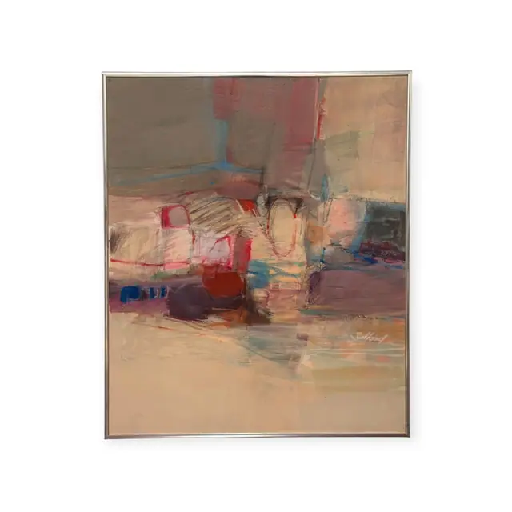
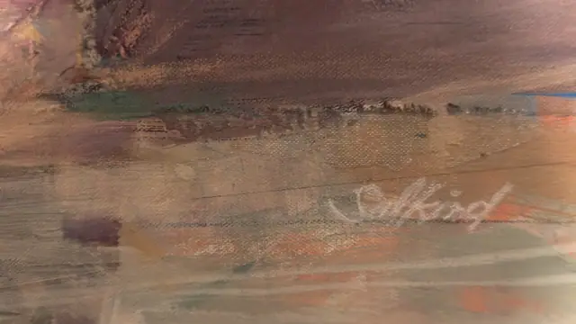
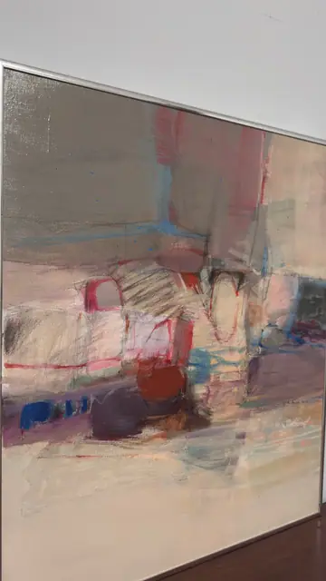

Paintings & Prints
Abstract Landscape in Rose and Grey, Salkind, Signed, Framed
Salkind · 1960s-1980s
Price Upon Request



About the Item
Salkind. A large square-ish abstract laid in with a palette knife and dry brush: broad horizontal bands of putty, warm grey and blush pink cross the canvas, interrupted at the centre by a cluster of blocky shapes in oxblood, aubergine and dull red that read like buildings or boats. Thin drawn lines in cerulean and scarlet cut across the field, and a short row of cobalt dashes sits at the lower left. The paint is thin and rubbed, letting the canvas weave show through, with denser impasto only in the central passage. Presented in a plain thin silver metal frame, unglazed. Medium: oil or acrylic on canvas. Signed lower right of the canvas, in white paint, reading "Salkind". Inscribed on the reverse or mount: Salkind (painted signature, lower right of the canvas). Condition: A few small blue paint specks on the upper left field (probably as painted); light surface dust; no craquelure or losses visible.
Details
- Creator:
- Salkind
- Creation Year:
- 1960s-1980s
- Dimensions:
- Height: 24.25 in (61.59 cm)
Width: 20.25 in (51.44 cm)
outside of frame - Medium:
- oil or acrylic on canvas
- Period:
- 20Th
- Condition:
- Offered in the condition shown in the photographs.
- Reference Number:
- VO-138
- Documentation:
- no certificate photographed
- Gallery Location:
- Salkind (painted signature, lower right of the canvas)